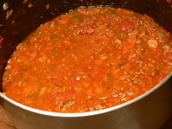
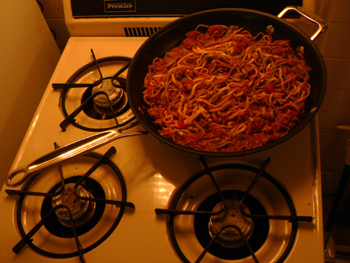

Lidia's meat sauce
I’ve always loved a hearty meat sauce on pasta, but the few times I’ve tried to make it have resulted in overcooked, watery disasters. Mom’s was excellent, and I was afraid I could never match it. Last night I learned that the secret to delicious meat sauce is time, time time.
Googling “meat sauce” quickly landed me at Lidia Bastianich’s recipe, which I followed almost exactly. It was appealing in its simplicity. Of course, I added various ingredients, such as garlic, fresh thyme, and some diced bacon, but I was true to Lidia’s cooking time of two to three hours. I felt slightly discouraged after about an hour, when it wasn’t holding together much at all. Finally, as I approached the two-hour mark, it started to look, sound, and feel like a sauce:

It bubbled and breathed and smelled fantastic, and it will feed us for days. We also managed to get very tipsy from a bottle of Valdemar’s spicy, luscious, excellent grand reserve:
I have been coveting this bottle of wine for months. Valdemar has several price levels of Rioja, this one being the most expensive, about $20 at Warehouse Wines and Spirits on Broadway. Twenty bucks may sound like nothing to wine people, but we drink table wine in this house, and I rarely spend more than $10 on a bottle that isn’t being presented as a hostess gift.
Here is the recipe for the meat sauce:
Makes 6 cups, enough to dress about 1 ½ pounds dried pasta
Ingredients
3 tablespoons extra virgin olive oil
1 medium yellow onion, minced (about 1 cup)
1 medium carrot, peeled and finely shredded (about 1/2 cup)
1/2 cup minced celery with leaves
Salt
1 pound ground beef
1 pound ground pork
1/2 cup dry red wine
1 tablespoon tomato paste
3 cups canned Italian plum tomatoes (preferably San Marzano), with their liquid, crushed
3 bay leaves
Freshly ground black pepper
4 cups hot water, or as needed
- Heat the olive oil in a 4-quart Dutch oven over medium heat. Stir in the onion, carrot, and celery, season lightly with salt, and cook, stirring, until the onion is translucent, about 4 minutes. Crumble in the ground beef and pork and continue cooking, stirring to break up the meat, until all the liquid the meat has given off is evaporated and the meat is lightly browned, about 10 minutes.
- Pour in the wine and cook, scraping the bottom of the pan, until the wine is evaporated, 3 to 4 minutes. Stir in the tomato paste and cook a few minutes. Pour in the tomatoes, toss in the bay leaves and season lightly with salt and pepper.Bring to a boil, then lower the heat so the sauce is at a lively simmer.
- Cook, stirring occasionally, until the sauce is dense but juicy and a rich, dark red color. This will take about 2 to 3 hours—the longer you cook it, the better it will become. While the sauce is cooking, add hot water as necessary to keep the meats and vegetables covered.
In other news, I got a free skillet from Cuisinart, as well as a few baking pans, with the $97 credit they gave me for my broken food processor/blender. It’s heavy and oven-safe, and it can replace the lightweight, teflon-coated Martha Stewart 12” that I’ve wanted to get rid of for a year. Can you believe how it dwarfs my stove? Sometimes I hate New York.

When Cuisinart decides to give you a credit, they send you the most pathetic catalog you’ve ever seen, full of mostly undesirable, ludicrously overpriced products. It took me three months to decide I had space in my house for any of the crap on offer. I’m happy with my skillet, though.
Comments
So are you saying that without your addition of thyme, the only seasoning in the original recipe is the bay leaves? It seems like it would be terribly bland, even with the long cooking. I guess Lidia just wants the flavors of the meat and tomatoes to be highlighted, but I don’t know, I like some herbs in my sauce.
That looks like a great frying pan, but let’s not say it was “free”; you paid almost $100 for it! I’m glad you finally cashed in that credit, though; it wouldn’t have surprised me if they would have told you it had expired if you had waited much longer.
I have recently ‘discovered’ Lidia – last weekend one of the pbs channels did about 10 eps which i saved and now get to copy to dvd – as well as her daily tv show – i think on the cooking channel?
anyway, i love the simplicity of this – and its just the right weather for it.
Oh, I love this Lydia recipe. Have been using a variation on it for a couple years. I add a few things: three or four country pork ribs that I toss in in the beginning and let simmer (remove them at the end and shred the cooled meat with your fingers; also toss in a couple anchovies (gives a really mellow undertone.)
The best spaghetti sauce I ever made was from a Betty Crocker cook book for kids that someone gave me when I was about 10. It also had a lengthy cooking time. Now I feel inspired to give the Lidia recipe a try and see how close I can come.
i made this tonight and LOVE it. however, i added some home grown thyme and oregano in the very last half hour of three hours of simmering – Delicious! Thanks for sharing – i couldnt find it in the Family Table cookbook!
That Rioja you were coveting is a top-o-the-line gran reserva, and for $20 I wouldn’t even bat an eye to buy it. That’s an excellent price! Most people who love wine overlook rioja as an excellent red. A good rioja is nectar of the tempranillo gods, and a gran reserva is as good as it gets.
Mom: yes, just the bay, which was weird. I suppose it would have tasted delicious as she wrote it, but I loved having thyme and garlic in it.
Sogalitno: it is as simple as it gets—my favorite kind of recipe. I’m glad it worked out for you!
Mbaldwin: I like the idea of the pork ribs and anchovies. Anchovies do add a subtle layer of savoriness that most people can’t identify.
Cooknkate: I’m glad to know I got a good price. Riojas have become my favorite reds in the last year. I’ve had a few bad ones, but most of them are heavy and spicy, which is what I’m after no matter the season.
I lived for years in a little apartment in Washington Heights whose kitchen was just big enough to accommodate the little sink, a stove just like that one, and a smallish fridge — and me. On some level I hated that kitchen, but then on another I really loved the challenge. One year I cooked Thanksgiving dinner for 14 people in that kitchen. The turkey cleared the oven with about an inch to spare on all sides.
It did drive me crazy that the wok I’d bought in California was bigger than my stove, though. Your skillet looks fine by comparison. ;)
I Lidia, I love your recipe you re the best I wach you everyday Pleace come to Chicago
I have always been frustrated how everything I cooked came out. UNTIL…watching one of your shows, Lidia, you said it right, and after that day I was born again. It was my junky cookwear. Folks, this is not a commercial, but Cuisinart cookwear has given me fun and happiness in the kitchen. Want to say many thanks to you Lidia….funny but I have never met you, but you feel like my mom always helping out. THANKS
I’m gonna give this one a try.. .so many I’ve tried can’t hold a candle to my Grandmother Pia’s sauce. She made magic in the kitchen I wish I had paid more attention.
Add a comment